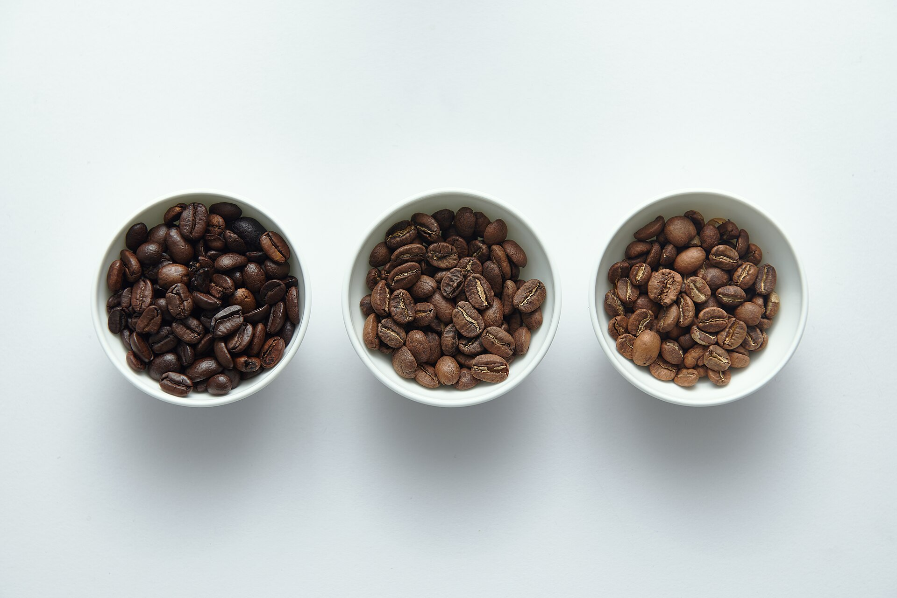
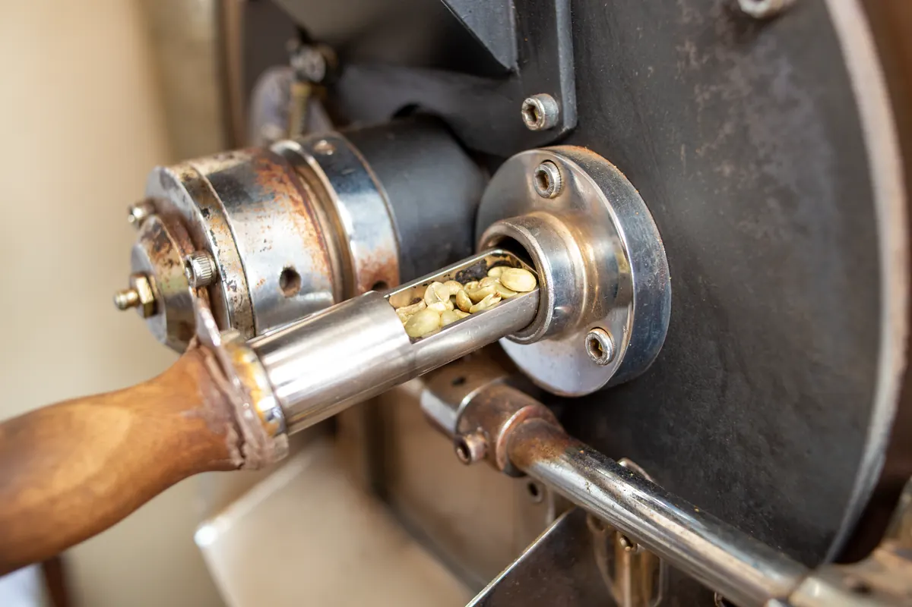

Morning coffee at Birchroom.
Filter by the cup, espresso at the counter and a seat by the window on Mill Lane.
See opening hoursFind the counter
Mill Lane, East Quarter. Walk in for coffee and Saturday tastings. We close on Mondays.
| Day | 08:0012:0016:0020:00Opening hours |
|---|---|
| Tuesday–Friday |
to
|
| Saturday–Sunday |
to
|
Coffee at the counter
Choose your cup at Birchroom. Filter changes with the morning batch.


The morning pour
At eight we grind the first filter batch. By ten the hand brewer is out for anyone who wants a single cup.


Why we roast for filter
Our house filter, brewed at the counter each morning.
We stop this roast while the acidity is still clear. In the cup it tastes of plum as it cools, with a little cocoa at the end.
At home, start with 16 grams of coffee and 250 grams of water. Grind a little finer if the cup tastes thin.
Saturday at the brew bar
Small tastings take place before lunch. Seats are first come, first served.

Filter side by side
Two brewers, one coffee
A lighter roast
Taste the same lot at two roast levels
Dialling in espresso
Try three shots at different grind settings
From the roastery
Short field notes on picking coffee, brewing it and tasting the difference.

Selecting a sample roast
At the sorting table

Reading a roast by colour
Three sample batches

Packing the basket
At the espresso machine
Start with sixteen grams
For our morning filter, pour 250 grams of water over 16 grams of ground coffee. Leave the first pour to bloom for half a minute.
16 g / 250 g
Medium grind · 30 second bloom
Wet the groundsWait 30 secondsFinish the pour
Come to the next tasting
Saturday 5 December at 10:00, on Mill Lane. Save the half-hour tasting to your calendar.
Save the tasting